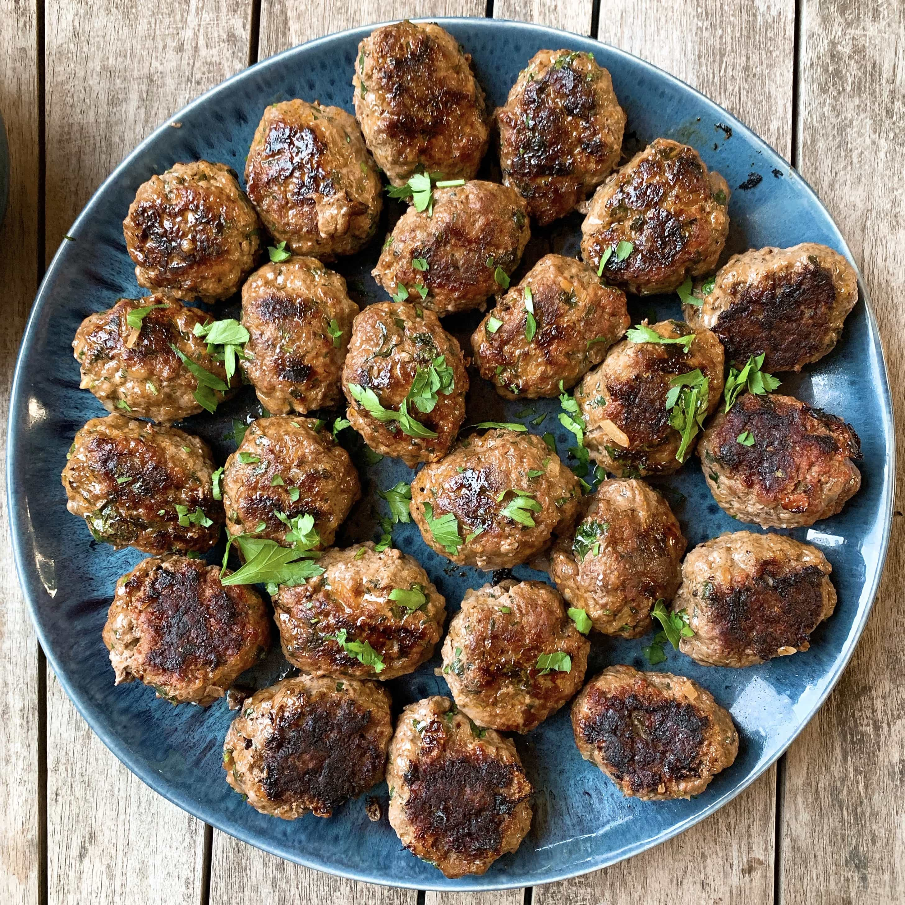

Koefte

If you are looking for a tasty main dish meal, try my new Turkish meatballs.
Steps
- Tear up bread slices into the bowl of a food processor; process into fine crumbs. Add ground lamb and egg; process until blended. Add parsley, garlic, cumin, mint, allspice, salt, and pepper; process until evenly combined.
- Roll lamb mixture into small meatballs.
- Heat olive oil in a large skillet over medium heat. Cook meatballs in batches, turning occasionally, until browned on all sides, 4 to 5 minutes per batch. Transfer to a paper towel-lined plate using a slotted spoon.